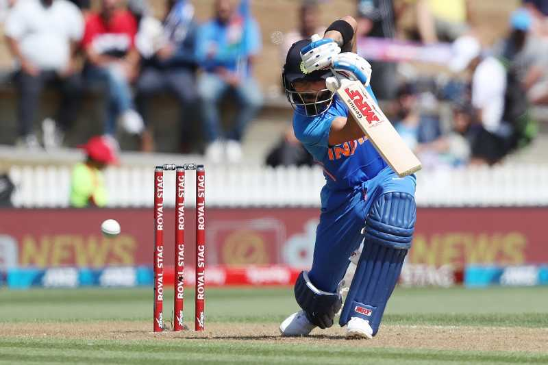

SAROJ BLOG
Travelling
It not only increases my knowledge, but also helps me overcome
problems that I am dealing with. I get to experience life's problems,
pleasures, and I come out of my personal bubble to become a better
person by exploring new cultures.
Playing
Sports balance our blood pressure and circulation. We don't feel
immediately tired if we are active sportsman. Our overwhelming life
conditions make us unhappy, playing sports in this circumstance will
make us motivated and refreshed again.

Cooking
A passionate home cook who finds joy in experimenting with flavors,
trying new recipes, and creating culinary delights. Enjoys the
creative process of meal preparation and the satisfaction of sharing
delicious dishes with others.